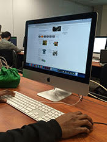
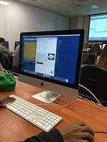

Needfinding
Observe the World Wildlife Fund Website (
worldwildlife.org )
- Looked for hover effects - expected hover but not present in some situations
- Interacted with popup that appeared on screen after 10 seconds
- Interacted with sliders
- Read a lot about the history and news of the organization
- Didn't realize could click on certain elements because there was no hover effect
- Clicked on tabs, which automatically scrolled down to the correct section on the page
- Checked for responsiveness


Feedback
- Liked how there was a lot of information and a range of projects
- Well-organized layout
- Sometimes there was too much information - felt overwhelmed
- Clicked into a sub-site (
support.worldwildlife.org ) which confused the user on why there was a
login page
Brainstorm
- Needs to have hover effects everywhere so the user knows which items are clickable
- Needs to be able to organize information in a way so it does not overwhelm the user
- Needs to be able to provide accurate and up-to-date information
- Needs to provide history and validity of organization
- Needs to have clean layout (grid)
- Needs to have clear navigation so the user doesn't get lost in the vast information
- Needs to be responsive
- Needs to have donate button
- Needs to have strong splash images
- Needs to be able to affect the user to take action